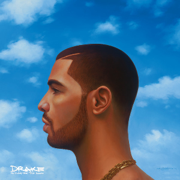
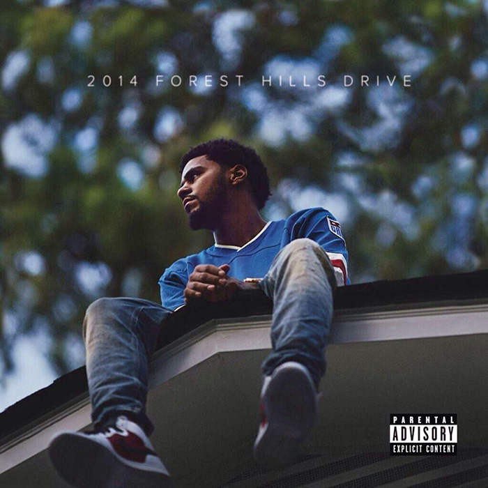
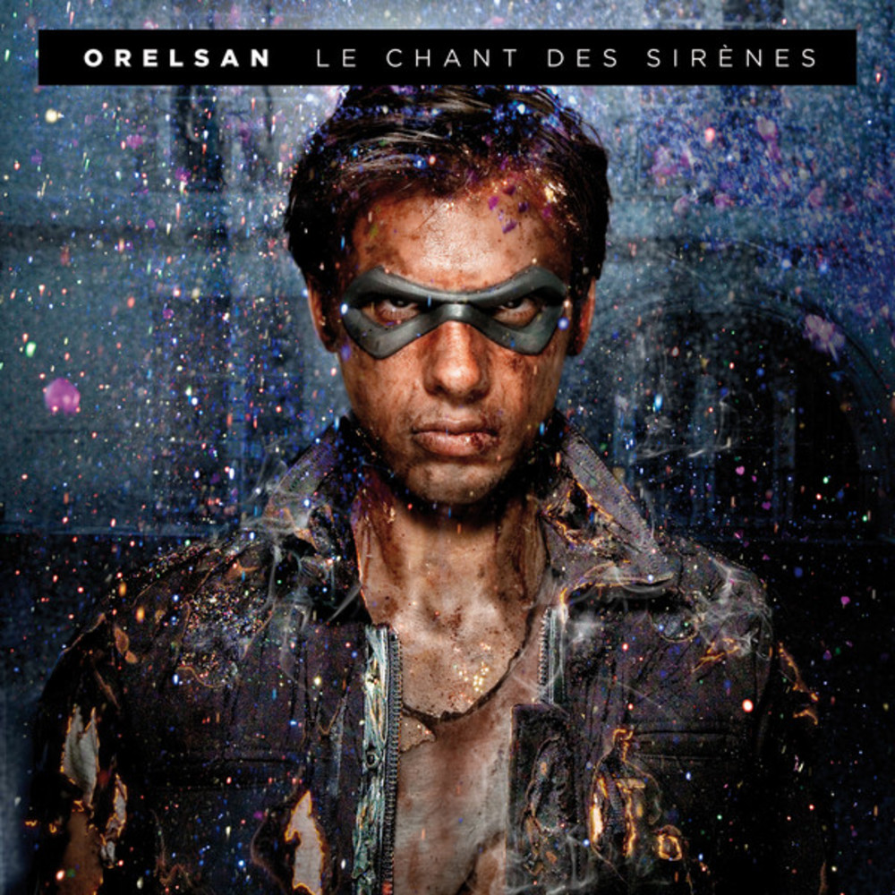
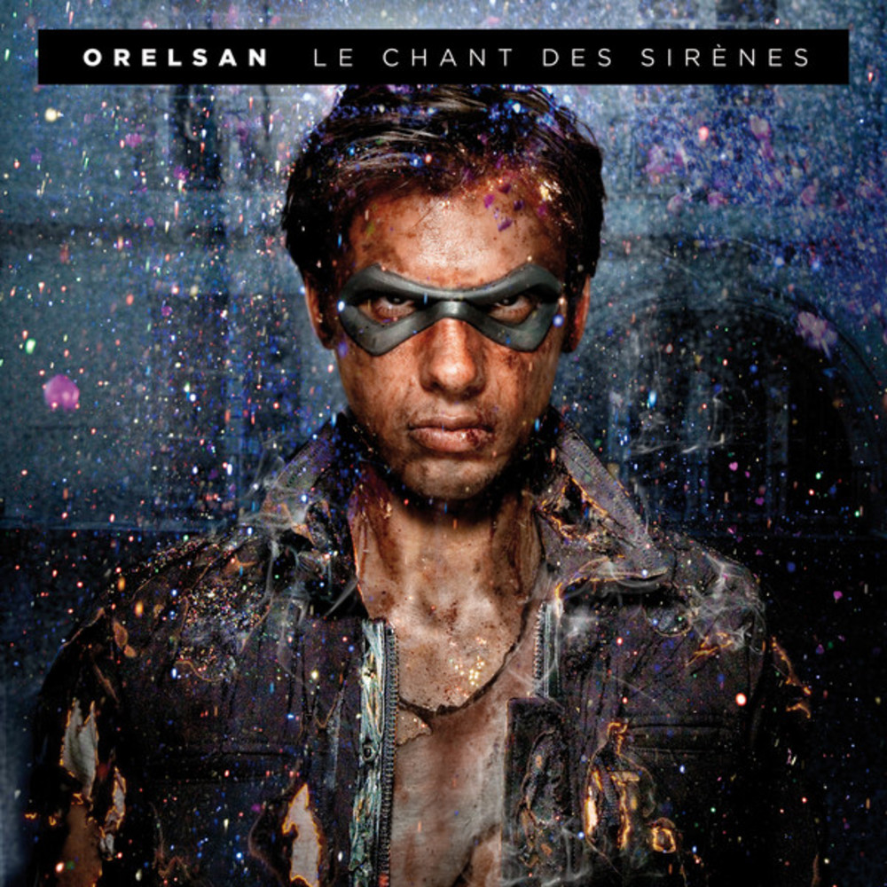
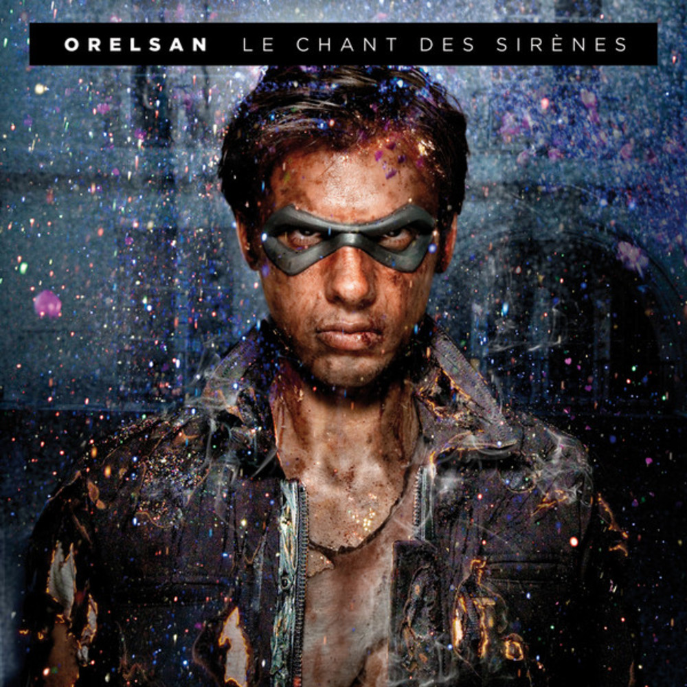
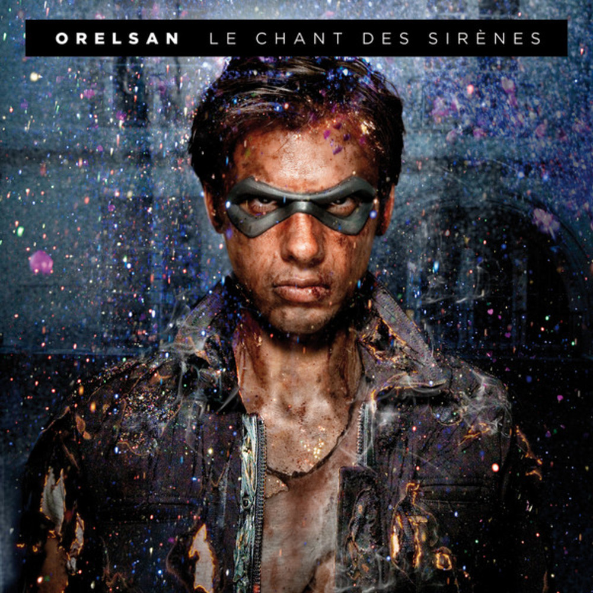

Mes 4 albums favoris


 


J'aime beaucoup la musique voici 4 de mes albulms préferés.

J'aime beaucoup la musique voici 4 de mes albulms préferés.
J'aime beaucoup le sport mais je suis avant tout un grand fan de basket. J'en fait depuis l'âge de 6ans, le basket est l'une des meilleur façon pour mour moi de décompresser.
Je suis aussi un grand passionné de la culture japonaise, Le Japon possède une culture hybride. Alliant tradition et modernité, on ne peut qu'être séduit par son originalité. Voici par exemple une specialité japonais, ce sont des ramen. Les ramen sont des mets japonais constitués de pâtes dans un bouillon à base de poisson ou de viande et souvent assaisonnés au miso ou à la sauce soja.
j'aime aussi beaucoup les manga, Un manga est une bande dessinée japonaise.